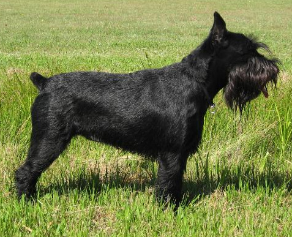

Ricardi's page
My Dog

In 1999, a study of mitochondrial DNA (mtDNA) indicated that the domestic dog may have originated from the grey wolf, with the dingo and New Guinea singing dog breeds having developed at a time when human communities were more isolated !
In 1999, a study of mitochondrial DNA (mtDNA) indicated that the domestic dog may have originated from the grey wolf, with the dingo and New Guinea singing dog breeds having developed at a time when human communities were more isolated from each other.[8] In the third edition of Mammal Species of the World published in 2005, the mammalogist W. Christopher Wozencraft listed under the wolf Canis lupus its wild subspecies and proposed two additional subspecies,
Log lobos
my team
back to
Hector's page
01/05/02